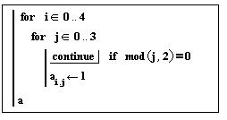
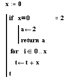

Exiting Loops and Programs |
Program loops are designed to continue until a condition is met or after a specified number of iterations. The break operator allows you to prematurely exit a loop, while the continue operator allows you to skip an iteration. The return operator allows you to prematurely exit a program out of the context of a loop.
Keystroke: [Ctrl] [Shift] [
Do not type the word "break." It does not produce the operator.
break
The break operator halts execution of the current loop and returns the last value calculated. The break operator is used in conjunction with a conditional statement to halt execution of a loop and return control to the first statement after the loop. This operator takes no arguments.
Keystroke: [Ctrl] [
Do not type the word "continue." It does not produce the operator.
continue
The continue operator skips the remainder of the current iteration and returns to the first loop statement. In a for loop, the iteration variable is incremented. The continue operator is used in conjunction with a conditional statement to skip the current iteration and proceed to the next one. It takes no arguments.
Keystroke: [Ctrl] [Shift] [\]
Do not type the word "return" it does not produce the operator.
return x
The return operator halts the program and returns x.


Make sure the condition to break or continue occurs after any expressions you want evaluated independently of the stopping condition. For example, when using continue in a while loop, remember to increment the iteration variable before executing the continue. Failure to do so causes an infinite loop when evaluating the program.
The return operator can be used on the last line of a program to identify the return value visually. The return operator can also be used to avoid "fall-through" with multiple if statements.
The return operator is helpful when debugging
a program; you can add and remove them to check the value of local variables
during program execution. return can also be used in recursive
programs to force the return of a base value and prevent further recursion.